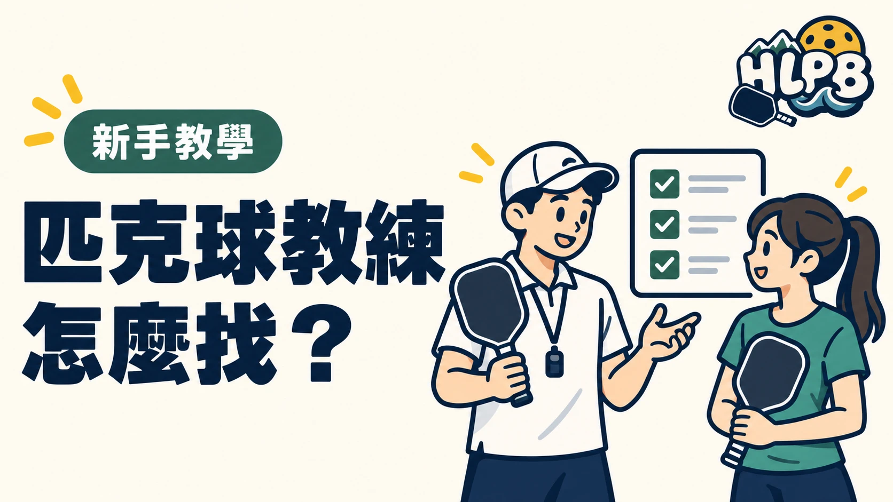

想學匹克球，看到教練介紹卻不知道怎麼選？先把自己的需求說清楚：完全沒打過、想學會規則，或已經會打、想調整技術。目標不同，需要的課程也不同。
先確認教練是否有帶過和你程度相近的學員。 看得懂示範、聽得懂說明，遇到問題也能得到回應，才比較容易把課堂內容用在球場上。
| 報名前確認 | 可以問什麼 |
|---|---|
| 教學對象 | 這堂課適合完全零基礎嗎？ |
| 課程內容 | 會教哪些技術、規則與計分？ |
| 上課安排 | 幾位學員、幾位教練、幾面場地？ |
| 資歷 | 有哪些匹克球教學經驗與相關認證？ |
| 費用及規定 | 是否含場地與器材？請假或停課怎麼處理？ |
證照可以列為參考，也要看清楚發證單位和認證項目。教練認證與裁判資格是不同項目，不能直接畫上等號。 USA Pickleball 官方網站列有教練教育與認證合作單位，中華民國匹克球協會也提供教練資訊。
在花蓮詢問課程時，可以一次提供程度、可上課時間與學習目標。先把安排問清楚，再決定報名，不需要急著選最貴或最進階的班。
報名前，把程度、課綱、人數和費用問清楚。
最後查證：2026-10-10｜HLPB 編輯整理，參考來源見內文
返回文章列表